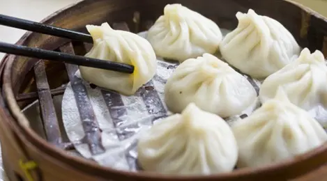

Chicken Dumplings

Bahan isian ayam:
- 300 gr daging ayam tanpa kulit, cincang kecil atau blender halus
- 2 siung bawang putih, haluskan
- 1 batang wortel, cincang kecil
- 1 buah bawang bombay, cincang kecil
- 1 cm jahe, haluskan
- 1 sdm saus tiram
- 1 sdm kecap asin
- 1/2 sdt merica bubuk
- penyedap rasa secukupnya (optional)
- air secukupnya
- kulit wonton atau pangsit secukupnya
Cara Membuat:
- Campur rata daging ayam yang sudah halus dengan semua sayuran dan bumbu.
- Ambil kulit wonton atau pangsit dan isi dengan adonan ayam. Rekatkan pinggirannya dengan air.
- Kukus semua pangsit kurang lebih 30 menit. Setelah itu bisa direbus sebentar agar kulitnya tidak terlalu kering.
- Pangsit siap sajikan dengan saus atau kecap
Back to main page